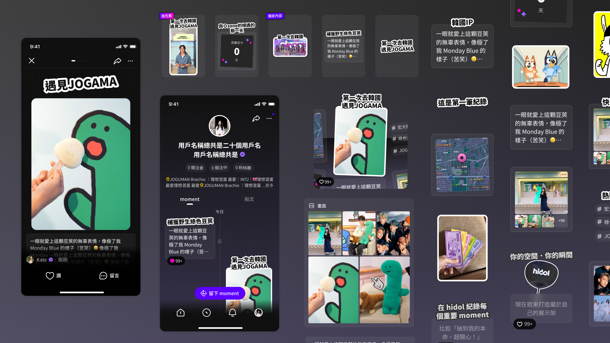
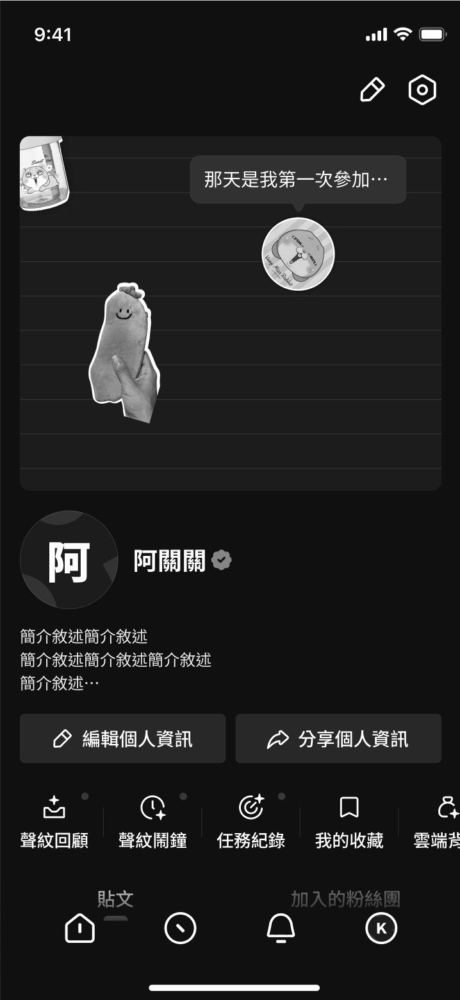
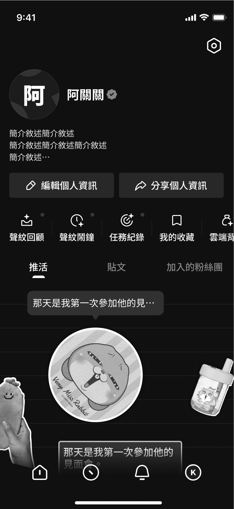

設計重點 01
個人頁採用時間軸，讓每一筆紀錄都有清楚的位置，也能隨著使用者的投入慢慢累積。
時間軸讓 Moment 與既有貼文各自有位置，不會彼此競爭。點點背景則讓空狀態不顯得冷清，也延續了後續首頁的視覺語彙。



曾經考慮的大面積版，視覺存在感較弱，使用者容易略過。
筆記版雖然更有自由感，但初次進入時認知負擔較高。
最後採用時間軸，是因為它更符合「慢慢累積」的心智，也能讓使用者理解這是一個會和自己一起成長的區域。